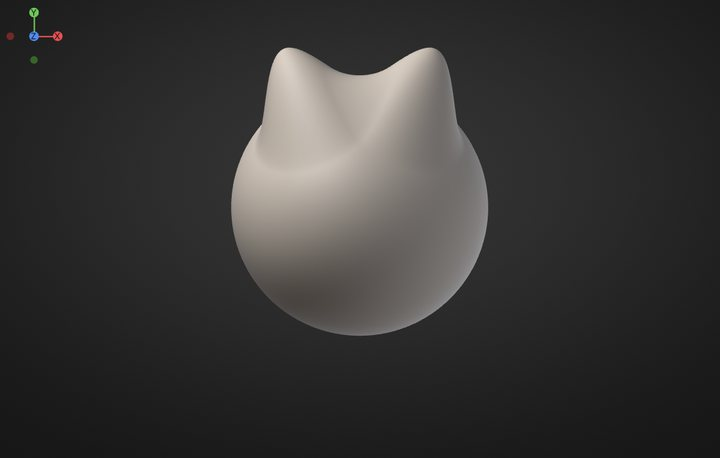
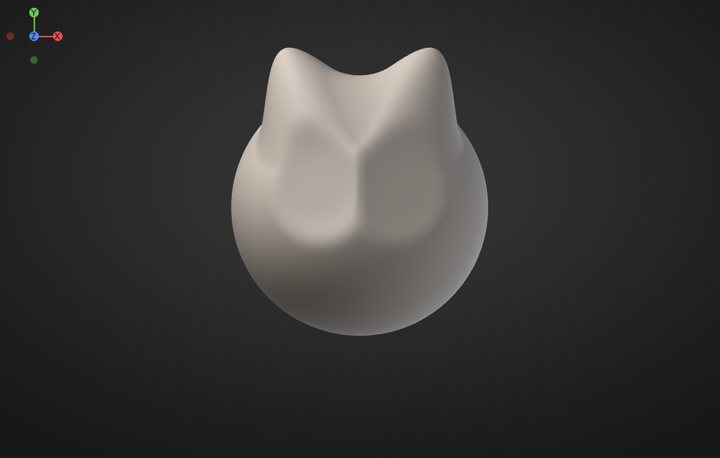
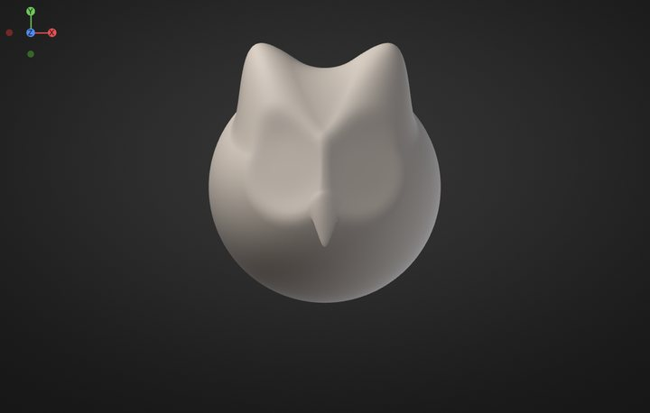
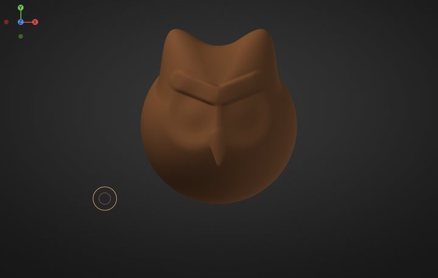
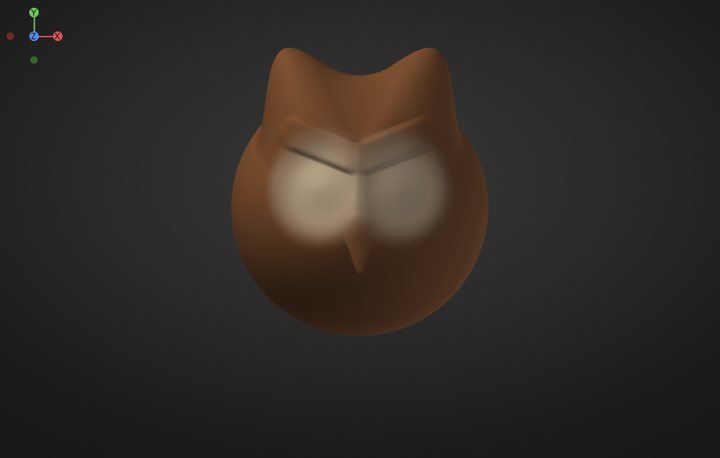

Your first sculpt in 10 minutes
Never sculpted before? In about ten minutes this lesson turns the default sphere into a cute owl head: ear tufts, a heart-shaped face, big amber eyes under stern brows and a little orange beak. It ends with a render you can share. You only need the built-in brushes, a mouse (a pen tablet is nicer, but not required) and these twelve steps.

The lesson uses the default look: the SculptForge layout, with the menus File, Edit, Sculpt, Paint, Mesh, View, Render, Help along the top, a tool shelf under them, the brushes along the bottom and the Tool panel on the right. If you switched to the Classic layout, the Classic layout notes say where things are there; Preferences, for one, has its own name in the palette bar there instead of sitting under Edit (where Preferences is). Every step can be undone with Ctrl+Z, so experiment freely.
Each brush remembers its own size. To set it, hold the cursor over the canvas, press S, type the number the step gives and press Enter (or drag the slider that appears). [ and ] make it smaller and bigger.
1. Start with a sphere#
Goal: a fresh sphere, seen from the front.
- Press Ctrl+N (File > New Sphere).
- Press F to frame it. To look around: drag on the empty background to rotate, Alt + drag on the background to move the view, scroll to zoom. Press F again whenever you lose it.
- Check that X is lit on the tool shelf: symmetry is on, so everything you do on one side happens on the other.

2. Pull up the ear tufts#
Goal: two pointed tufts on top of the head.
- Pick Move: press 4, or click Move on the bottom shelf. Set its size to 110.
- Start on the top of the sphere, a little left of the middle, and drag up and out. Symmetry pulls the right tuft.


3. Dig the face#
Goal: two round hollows, the owl's face discs.
- Pick Clay: press 2. Set its size to 120.
- Hold Alt and click four times where the left eye goes, a little left of the middle and halfway down. With Alt, Clay digs in instead of building up.


4. Shape the beak#
Goal: a small pointed beak between the eyes.
- Pick Inflate: press 5. Set its size to 30 and click three times on the middle line, just below the face discs: a bump.
- Pick Move (4), size 30. Drag from the bump a short way down: it points.
- Pick Smooth (3), size 24, and drag once down the beak to tidy it.

5. Add three levels#
Goal: enough polygons for crisp eyes and colours.
- Press Ctrl+D three times (Tool > Geometry > Add Level). Each new level makes four polygons out of every one and smooths the shape: about 5 million triangles now.


6. Add the eyes#
Goal: big round eyeballs in the face discs.
- Pick Inflate (5), size 52.
- Click three times in the middle of the left face disc. Symmetry adds the right eye.

7. Give it brows#
Goal: a V of brows that gives the owl its look.
- Pick Clay (2), size 30.
- Drag twice from between the eyes up and out over the left eye.

8. Colour it brown#
Goal: warm brown feathers everywhere.
- Open Paint. In Vertex Paint & Color, pick a warm brown in the colour wheel and click Fill.


9. Paint the face#
Goal: soft cream face discs.
- Press P (or click Paint on the tool shelf): the brush now paints colour without changing the shape. Set its size to 100.
-
Make the edge soft: with the cursor over the canvas press O (Falloff), type
0and press Enter. - Pick a cream colour and click twice on the left face disc.


10. Paint the eyes#
Goal: amber eyes with black pupils and a glint.
-
Give the brush a hard edge: O, type
-100, Enter. - Size 44, amber: click once in the middle of the left eye.
- Size 24, black: click once in the same spot for the pupil.
- Size 8, white: click once at the top left of the pupil for the glint.

11. Paint the beak and tufts#
Goal: an orange beak and darker tuft tips.
- Size 16, orange: drag down the beak, twice.
-
Soft edge again (O,
0, Enter), size 70, dark brown: click twice on the tip of the left tuft. - Press P again to go back to sculpting.

12. Shade it and save a render#
Goal: a picture of your sculpt to share.
- Press M over the canvas and click White: a clean material that shows your colours.
- Open Render > Materials and click PBR under Viewport Shading: soft studio light with gentle reflections.
- Turn the view to a three-quarter angle, a little from above, and press F.
- Click Save Render at the bottom of Render > Materials. The status bar names the picture (twice the size of the view); find it under Library > Image. Size and the shape buttons (1:1, 16:9, 9:16, 4:3) below it make a bigger or differently shaped picture, as a PNG or a JPG. Light, above it, turns the light around the model.
- Press Ctrl+S to save the project.

Well done: that's a sculpt, painted and rendered.
What's next#
- Share it in #show-your-sculpts on the SculptForge Discord. We'd love to see it.
- Try every brush and the keys that change them: Sculpting and brushes.
- Masks by brush, lasso, rectangle and cavity: Masking.
- Paint layers, cavity paint and Lit Sphere materials: Vertex Paint and materials.
- Find your way around the menus and shelves: The interface.